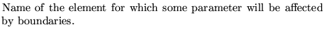
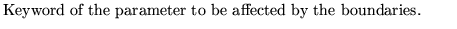
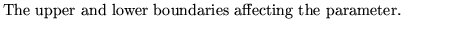
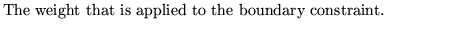
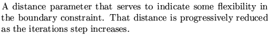

Next: Set symplectic option on
Up: Use and description of
Previous: Set fit points
This operation sets boundaries on the variables used in the least square fitting
operation. This is done via a supplementary constraint that uses an
internally defined penalty function. When boundaries are in use the
achieved value for the fit function will depend strongly on the
distance between the "ideal" minimum and the boundary values when
that minimum is outside the boundaries. Choice of weights will change
greatly the final values achieved.
Input format
SET Limits on variables ......(up to 80 characters)
name keyword upper lower weight distance
........................................
name keyword upper lower weight distance
99,
Parameter definitions
Name 
Keyword 
Upper Lower 
Weight 
Distance 
Dobrin Kaltchev
2004-10-20